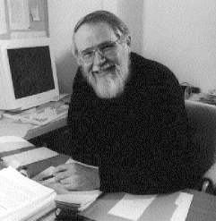

November 15, 2022 — Dr. Brian Kernighan is a Canadian computer scientist who contributed to the development of UNIX at Bell Labs. Along with Dennis Richie, he co-authored a fundamental book on C, The C Programming Language. He has been training the next generation of programmers at Princeton University since 2000 and has been monumental in his contribution to the computer science community at large. He wrote the first documented “Hello World!” program and to that we say, “Hello, Brian!”.
Dr. Kernighan: The main idea in Awk was associative arrays, which were newish at the time, but which now show up in most languages either as library functions (hashmaps in Java or C++) or directly in the language (dictionaries in Perl and Python). Associative arrays are a very powerful construct, and can be used to simulate lots of other data structures.
I guess the pattern-action paradigm was also not novel but not widely used at the time. It's an effective way to organize some kinds of computations.
Dr. Kernighan: None? This was a long time ago (think 1970s), and the languages that I have been involved with have all been new and special-purpose so there wasn't much available prior art. Of course one vital tool was Yacc, which made it really easy to create and experiment with grammars and have them converted into highly efficient parsers. Lex did the same thing for the lexical level, again replacing a lot of tedious code with a set of rules. Lex is certainly an example of a pattern-action language; arguably Yacc is as well, so it's kind of a virtuous cycle.
Dr. Kernighan: Try designing and implementing small and special purpose languages. They are lots of fun, often very useful, and a great deal easier than trying to create a replacement for Rust or C++. Look for things that could be automated if you had the right kind of language to spell out the steps, then create a simple compiler and runtime. Jon Bentley wrote a couple of articles on this long ago that are still relevant.

Image from Wikimedia Commons. Thank you for your time Dr. Kernighan!
{kind=link}